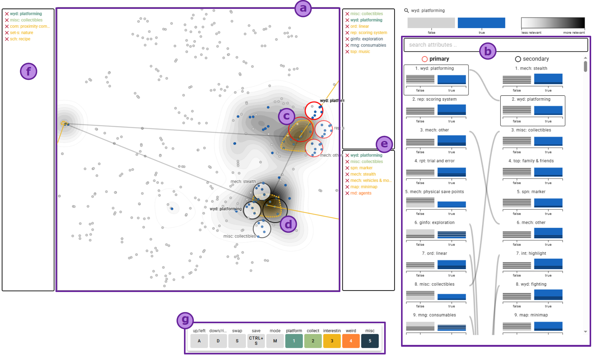

AnnoLens: Exploration and Annotation through Lens-Based Guidance
(opens in new tab)
Venue. VIS (2025)
Materials.
DOI(opens in new tab)
PDF(opens in new tab)
Abstract. Annotation is often a time-consuming but fruitful activity in data analysis contexts. The manual labor required to create useful annotations is a barrier that keeps users from documenting their analysis, especially intermediate results. To address the needs of exploration and annotation alike, we propose integrating annotation with lens-based interactions, combining both with guidance. We investigate the exploration-annotation requirement space, identifying challenges and extracting five design requirements for annotation in exploration contexts. Based on this investigation, we designed ANNOLENS—a concrete instantiation of such a system that lets users explore and annotate dimensionality-reduced multivariate data. It employs a dual-lens approach for contrastive exploration, using guidance to steer users toward interesting data subsets and attributes. Annotation is directly integrated into the lenses, letting users quickly annotate hunches and discoveries. Automated merging and linking serve to simplify annotation management and reduce disruptions. In a pilot study, we conducted a preliminary evaluation of our approach, which indicated that users find it easy to annotate data and were able to incorporate their knowledge and unique perspective into the process. A free copy of this paper and all supplemental materials are available at https://osf.io/zpu6c/.
Link to this page: